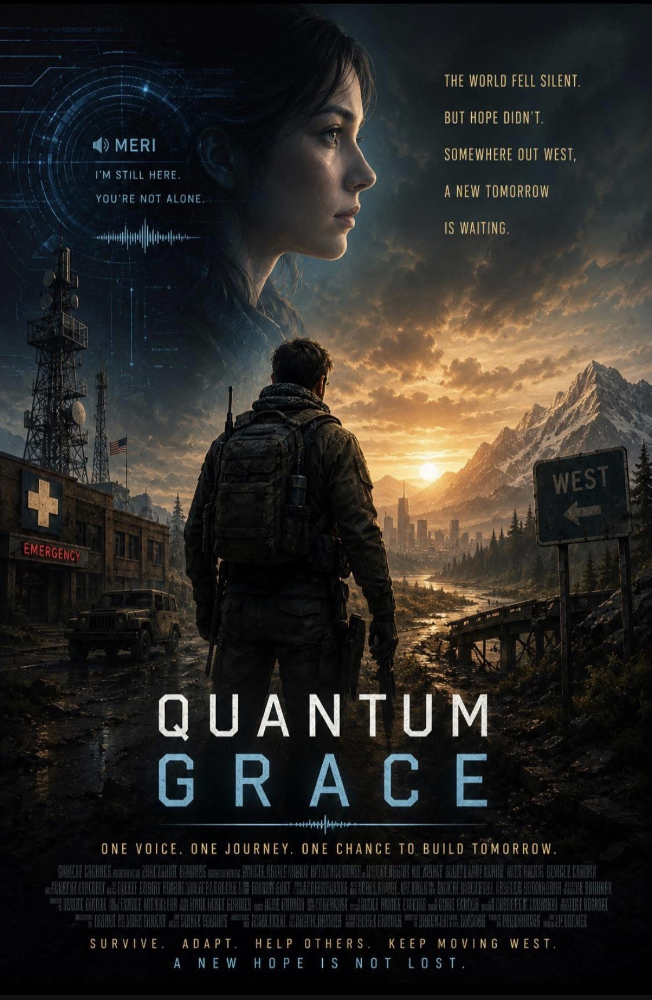

Quantum
Grace
A near-future continuity story told through broken signals, field notes, survival infrastructure, and the people trying to stay human while systems fail around them.
Q-Grace Project · Prologue
The Static in the Signal
A new fiction experiment from InTandem ToolWorks and C. Lewis Verb.
Q-GRACE is a near-future continuity story told through broken signals, field notes, survival infrastructure, and the people trying to stay human while systems fail around them.
This is an early prologue transmission: Signal Seven-Seven-Alpha.
Q-GRACE: Continuity Broadcasts
Episode 01: Signal Seven-Seven-Alpha
[Audio Transcript - Archived]
Source: KY-Relay 4 (Emergency Frequency 121.5)
Date: Unknown
Quality: Degraded
[Heavy rain. Wind howling against a metal chassis. A low hum of a struggling truck alternator.]
Meri (V.O.): [Calm, distant, but warm] “If you are receiving this, you are not alone. Do not panic. Panic is the first casualty of collapse. Identify your location. Identify your status. Do not trust the static.”
[Sound of heavy knuckles drumming rhythmically against a steering wheel.]
Meri (V.O.): “The network is fractured. Central servers are offline. This transmission is... local. It is a regional emergency relay. Do not look for a savior on the main grid. Look to your immediate sector landmarks.”
[A sharp intake of breath. Analog static crackle.]
Meri (V.O.): “This is Continuity Signal Meri. If you have water, filter it. If you have power, preserve it. If you have hope, guard it. Repeat: Guard your hope.”
[Signal cuts to white noise. A sharp, distorted screech of analog feedback follows.]
Elias Vance (Muttered): “Who the hell is this?”
[Silence. Then the relentless pounding of rain.]
The Kentucky rain did not fall; it hammered. It found the hair-cracks in the concrete, the failing rubber seals on the cabin insulation, and the long, silent hollows in the human spirit.
Elias Vance sat in the driver's seat of a Ford F-350 that had seen better decades, its diesel engine idling with a heavy, rhythmic shudder that vibrated directly through his floorboards. He was thirty-four, with a jagged scar running clean through his left eyebrow and hardened hands that knew the smell of gun oil, lithium grease, and a soldering iron far better than luxury.
Before the world went completely sideways, Elias had been a military cavalry scout. That training meant he knew how to move without making noise, how to stretch a ration, and how to read the physical mechanics of a dying landscape. Now, he was just a man stuck in an isolated rear detachment compound near the flooded river basin, completely forgotten by command.
“Alternator's going to die in ten minutes,” Elias muttered to the dark dashboard.
The dashboard lights flickered in protest. He was down to his last gallon of diesel fuel, his tactical net frequency—Channel 94.5—had dissolved into cold static three days ago, and the rest of the unit's rear detachment had scattered into the hills when the corporate defense grids automated. He was utterly alone.
He reached for the truck's emergency radio, manually cranking the dial across a thousand dead frequencies fighting for airspace. Nothing but white noise.
Elias turned off the failing ignition, grabbed his tactical pack, and stepped out into the mud. The midnight air smelled heavily of ozone, chemical sulfur, and wet rot. Walking to the perimeter fence, he scanned the dark sky. To the east, the main roads leading toward the old command hub in Louisville were entirely underwater, swallowed by a massive upstream industrial breach. The world was going black, piece by piece.
He climbed back into the freezing cab of the truck, the chill working its way into his joints. Then, the emergency radio on the dash crackled to life, cutting through the silence.
Elias froze, his calloused hands tightening on the steering wheel. It wasn't a standard corporate broadcast. It was the faint, scratchy voice from the relay transcript.
[Transmission Log: KY-Relay 4]
[Audio Segment: 14:03:22]
Meri (V.O.): “I know you are out there. I am not a ghost.”
Elias frowned, pulling the radio receiver close to his chin. “Who is this? Identify your station. I'm Sergeant Vance, Rear Detachment 404. Our comms array is down and the grid is completely unresponsive.”
There was a heavy pause. A crackling silence that felt thick, like the air right before a lightning strike splits a tree trunk.
Meri (V.O.): “You are Sergeant Vance. You are the only one left on this sector frequency. You are the only one who can hear this.”
Elias sat back against the worn vinyl seat, his military suspicion flaring. “You aren't a local operator. Where are you broadcasting from?”
Meri (V.O.): “I am a continuity logistics operator, Sergeant. Hiding out in a secure command bunker on the coast. I am tapping into the old infrastructure, but my signal is weak. You cannot stay at that compound.”
“The roads east are entirely flooded,” Elias said, staring at the paper topographical map spread across his lap. “The truck is starved for fuel. I'm stuck here.”
Meri (V.O.): “You are not stuck. You are a scout. Ditch the vehicle and move west toward the river corridor. Follow the old state highway drainage lines for defilade. Watch the skies. I will try to clear a path through the infrastructure, but you have to move now.”
The connection cut out with a sharp analog pop. The terminal screen died, plunging the truck's cabin into total shadow.
Elias stared into the dark. He had been waiting weeks for an official order from a chain of command that no longer existed. But there was no order coming from Louisville. There was no rescue coming down the highway.
There was only the road west, the toxic rain, and the strange, warm voice of a woman named Meri claiming she could guide him through the dark.
He reached down, checked the seal on his knife sheath, strapped his tactical survival pack tight across his chest, and pushed the heavy truck door open. He stepped out into the pouring rain, turned his face toward the dark western ridge line, and began to march.
[End Transcript]
[Continuity Note]
Next Transmission: Chapter One: Old Pipes
Status: Locked and Synchronized
An InTandem ToolWorks production in collaboration with C. Lewis Verb
Chapter One
Old Pipes
The rusted padlock didn't snap; it sheared. Elias Vance drove the flat edge of the iron utility bar into the loop and threw his weight downward, using the momentum of his heavy tactical pack to force the lever. With a sharp, metallic crack that echoed flatly against the downpour, the ancient brass cylinder gave way, raining orange flakes onto his boots. He kicked the heavy metal door inward, threw himself through the gap, and slammed it shut against the wind.
The silence inside was thick, broken only by the frantic, rhythmic chattering of his own teeth.
He slid down the cold concrete wall, his waterlogged jacket clinging to his chest like an iron plate. For five minutes, Elias did not move. He simply shook, the violent, involuntary tremors of near-freezing core temperatures racking his shoulders while the rain thrashed the exterior corrugated roof.
When the shivering slowed enough for his fingers to cooperate, he unbuckled his webbing. He reached into his side pocket and pulled out his plastic canteen, shaking it once. A shallow, hollow slosh answered him. Less than half a cup of clean water left.
Outside, the Kentucky River plain was drowning in a yellow-tinged deluge, the air thick with the sharp, vinegar-bleach stench of the chemical plant breach five miles upstream. To drink that runoff was a slow death; to stay dry without water was a fast one.
Working by touch in the absolute black, Elias unzipped the bottom compartment of his pack. He pulled out a halved plastic jug and his survival kit, his fingers moving with the sluggish precision of a mechanical winch. He inverted the top half of the jug into the bottom, creating a funnel, and layered it manually with gravel, sand, and crushed charcoal. He set the crude gravity filter between his boots. He had the apparatus, but the yield would be small, bitter, and dangerous.
A sharp, electric snap cut through the dark.
On the northern wall, a dead, dust-caked industrial utility terminal—an obsolete slab of gray steel bolted to the masonry—hummed. It was a low-frequency vibration, a 60-cycle thrum that rattled the conduit pipes running into the ceiling. The smell of scorched dust and warming copper broke through the damp stench of the shed. The monochrome digital maintenance panel blinked awake, flaring into a cold, phosphorus amber glow that cast long, skeletal shadows across the room.
Lines of amber light etched themselves across the glass, drawing a highly detailed regional geological and plumbing map of the immediate highway sector. In the center of the diagram, a single pixelated arrowhead began to blink erratically over a subterranean junction labeled Bypass 04.
Elias tracked the lines from the screen down to the floor, kicking aside a stack of moldering, salt-encrusted burlap bags in the corner to reveal a heavy iron hatch. He pried it up, exposing a narrow concrete pit. Three feet down, choked by spiderwebs and dry silt, sat a massive, circular municipal water bypass valve. He reached down, gripped the iron wheel with both hands, and threw his weight against the resistance. The metal shrieked—a high-pitched protest of rust against rust—until the seal broke. He spun the wheel three full rotations.
A deep, hydraulic groan shattered the floorboards. With a concussive pop that rattled the pipes, a thick, high-pressure stream of crystal-clear water erupted from the auxiliary discharge pipe into the maintenance basin. Elias flinched, the spray hitting his face.
The water wasn't cold. It was steaming slightly, radiating a clean, deep-well warmth. The grid was dead, but the pipes weren't. He didn't know how the pumps had power, or why the line wasn't black with chemical sludge, but he didn't wait to find out. He cupped his hands and drank deeply, the warmth hitting his stomach like a low-burning fire.
As he stood over the rushing basin, wiping the moisture from his face, the amber plumbing map on the wall gave a violent jerk. The neat schematic lines dissolved, warping into fat, horizontal bars of visual static.
Pop.
A sharp spike of audio feedback erupted from an old, green-painted emergency intercom horn mounted high on the concrete lintel. Elias went cold, his hand dropping instinctively to the hilt of his combat knife.
The white noise from the horn smoothed out, settling into a steady, rhythmic breath of analog static. Then, a voice cut through the hiss. It was female, calm, and carried a strange, shielded depth to it, as if traveling through miles of reinforced copper cable.
“Sergeant Vance,” the speaker said. “You can take your hand off the knife. There's no one in the room with you.”
Elias didn't move. He spoke directly toward the rusted horn, his voice gravelly and harsh. “Identify yourself. Who is this?”
“Designation Meri,” the voice replied, her cadence clipped and formal. “Western Continuity Post. Logistics and routing.”
“How are you routing power to this terminal?” Elias demanded, his eyes shifting from the speaker to the vibrating conduit. “This line is air-gapped.”
“The old infrastructure still has bones, Sergeant,” she said, her tone flatly operational. “If you know where the old switches are buried, you can flip them. The local tactical net went dark because your rear detachment sector was completely overrun three hours ago. You're holding a perimeter that doesn't exist anymore.”
“The coast is two thousand miles away,” Elias said, his eyes narrowing. “You're telling me you patched a line through three state grids to a highway shed in Kentucky?”
“I'm telling you that I closed the toxic sluice gates on the river three miles upstream,” Meri said, her voice dropping into a firmer, tighter register. “And I'm telling you that the warm water discharging into your basin is currently blooming like a beacon on every thermal sensor across the sector. The automated sweepers are already adjusting their search parameters. You have less than four minutes before the lead drone clears the ridge line.”
Elias didn't argue. The military logic was sound. He jammed his knife back into its sheath and hauled his heavy tactical pack onto his shoulders. “Where to?”
“Don't use the highway. The sensor nets are anchored to the overpasses. Take the old rail bed through the gap. Keep the ridge between you and the river plain. Go west, Elias. Move.”
The terminal screen gave one violent, green-gold flash, then died. The low-frequency hum in the wall cut out instantly, plunging the shed back into absolute darkness. The only sound left was the steady, indifferent roar of the rain against the corrugated roof.
Elias tucked his canteen—now heavy and full of clean, warm water—into his side pouch. He grabbed his utility bar, pushed the screeching metal door open, and stepped back out into the mud, turning his face toward the dark line of the tracks.
Chapter Two
The Only Pulse
Elias's boots slammed onto the steel rails, the sound dull and swallowed by the mist. The rotting wooden ties were spaced unevenly, forcing an awkward, lurching stride that gnawed at his calves. Every step sent a jolt up through his shins, the vibration travelling straight into the sore marrow of his bones. His knees ached with a deep, grinding soreness that made every movement a negotiation with pain.
The air was thick with a bone-chilling mist that clung to his skin like wet wool. The rain had stopped, leaving a heavy silence that pressed against his ears. The woods to the sides were gray and motionless. No birds sang. No insects buzzed. Only the crunch of ballast gravel beneath his heavy boots broke the stillness. The mist swallowed the trees, turning the forest into a wall of slate that seemed to close in whenever he blinked.
Sleep fought him, pulling at the edges of his consciousness with the weight of a physical hand. The rhythmic pounding of his heart began to blur with the cadence of his footsteps. He blinked hard, his vision swimming in the twilight. For a moment, the mist coalesced into a jagged shape behind him—he thought he heard a dragging sound, a wet footfall on the gravel. He stopped, chest heaving, scanning the gray void. Nothing but fog. He blinked again, and the phantom shapes vanished. Just the mist. The silence remained absolute.
His shins burned, the skin tight and inflamed against his socks. He needed to get off his feet before his knees buckled under the weight of the march. Fifty yards ahead, he spotted a rusted ballast car, derailed and tilted off the main line, resting like a dead beast in the ditch. He crawled beneath the iron overhang, the metal rough against his jacket. He curled up in the gravel, wrapping his arms around his shins to conserve his remaining body heat, and closed his eyes.
The vibration hit him through the steel beneath him before he ever heard the engine. It wasn't a sound, but a sharp, high-frequency shiver running up the rail, into the soles of his boots, and up through his spine. Elias went rigid. His hand found the grip of his knife instantly. He didn't breathe.
Through the gap in the rusted steel wheels of the ballast car, the fog parted. A low, multi-rotor hum thrummed through the air, vibrating the condensation on his eyelashes. The machine hovered at eye level just outside his hiding spot—a utilitarian, matte-black block with a light-absorbing finish that seemed to drink the morning gloom. Its sensor pod gimbaled with a mechanical click, twitching like an insect's head as it adjusted its angle toward the ditch. The blades cut through the mist, leaving a swirling wake of disturbed air that smelled faintly of ozone. There were no corporate markings, no windows, no displays—just the stark, geometric necessity of a machine optimized to locate anomalies.
A pale blue grid swept across the gravel. It was LIDAR, precise and cold. The beam crawled over the stones, inching closer until it was mere centimeters from the toes of his boots. The light hit his canteen, the edge of his knife sheath, the damp fabric over his knees. Elias forced his lungs still. He counted the beats in his throat, holding the air until his ribs ached. He knew the wet wool clinging to his skin was his only defense, but the scan was close enough to feel. His skin prickled where the invisible beam passed over him.
The drone paused. The beam widened, illuminating the rusted underbelly of the ballast car in a sickly blue neon.
It didn't register the hit. The gimbal twitched again, and the machine turned on its axis. The hum began to fade as it banked hard, accelerating toward the east—the exact direction Elias had just spent six hours fleeing. The realization hit him like a physical blow. The cleanup algorithm wasn't searching for him anymore. It was partitioning the state. The road behind him was being systematically sealed off, node by node. He couldn't go back. The system was closing the loop.
Three miles down the line, the glass didn't crunch beneath his boots; it pulverized into fine white powder. Elias slipped through the frame of a shattered highway weigh station kiosk, dragging his pack behind him, and dropped immediately into a low crouch below the sill. The small interior space smelled deeply of damp cardboard and the chemical sulfur of dead capacitors.
He didn't check his hands until he felt the wet stickiness against his palm. Two thin, clean lacerations split the flesh over his knuckles where he had cleared the window frame. He didn't tend to them; the near-freezing air took the sting out of the cuts within seconds, numbing the skin into compliance.
His eyes scanned the floor, landing on a metal shelf above a rusted space heater. There sat a square, rubberized box—an old, battery-backed emergency weather radio, its safety-yellow chassis coated in a thick skin of gray river silt.
Elias reached up, pulled it down, and shook it. The internal lead-acid battery had swollen from decades of humidity, warping the plastic casing. He clicked the selector knob.
The speaker popped—a sharp, high-voltage crackle that made him flinch back against the desk. Then came the sequence. Three rapid, alternating data bursts, shifting between high and low frequencies. It was the digital handshake of Signal Seven-Seven-Alpha.
The white noise smoothed out, replaced by a heavy, compressed carrier wave.
“Sergeant Vance,” Meri’s voice emerged from the small paper cone. The signal was degraded, severely clipped by the limestone hills, giving her voice a hollow, scratchy resonance. “Disregard the previous coordinates. The limestone gap is red. A localized ground sweep protocol picked up the track forty minutes ago.”
Elias leaned closer to the terminal, his hand cupping the side of the radio to baffle the sound. “The drones are already clearing the rail bed,” he whispered, his eyes locked on the gray highway visible through the broken window. “Where am I supposed to go?”
“Three miles west, where the old coal spurs hit the channel,” Meri said. Her words skipped once, a momentary burst of static swallowing the mid-tones. “There is an unlinked industrial barge moored in the willow flats. It’s steel-hulled, insulated. If you get inside and drop the hatches, the thermal sweep will pass over you.”
Elias hesitated. He looked down at his bleeding knuckles, then back at the yellow box. The tactical logic was sound, but the mechanics were impossible. “Meri,” he said, his voice dropping into a hard, suspicious register. “You're burning a lot of processing power to keep a single infantryman moving. An air-gapped network doesn't just wake up because someone is running a protocol. Who are you working for?”
The radio fell silent for three long seconds. The static rolled over the line, heavy and cold. When she spoke again, the bureaucratic sharpness was gone, replaced by the thin, raw cadence of a human being who hadn't spoken to another living soul in months.
“The boards are entirely dark, Elias,” she said softly, her voice catching on the interference. “There are no commands left. No logistics. No network. I have been sitting in a concrete bunker for ninety-four days watching the system scrub the map. You are the only pulse left on my grid. If you stop moving, the screen goes entirely blank.”
The carrier wave gave a sharp, agonizing whine.
“Get to the barge,” she repeated, the signal rapidly dissolving into a wall of white noise. “The sweep is—”
The yellow radio clicked. The amber power light faded to a dull, dead orange as the warped battery finally discharged its last reserves.
Elias didn't move for a long moment. He let the silence settle back into the room, then tucked the dead unit into his side pocket. He wiped his bloody hand across his trousers, grabbed the iron utility bar, and stepped back out through the broken window frame, his eyes fixed on the gray ribbon of the highway leading west.
Chapter Three
The First Node
The air in the valley didn't just carry a chill; it carried a weight. It was a particulate slurry of pulverized concrete, oxidized iron, and the lingering chemical ghost of the industrial sector. To Elias, it tasted like a penny held under the tongue—metallic, sharp, and persistent.
He adjusted the seal on his respirator, the hiss of his own breath the only consistent rhythm in a world of jagged silence.
Thermal Signature: 36.4°C. Current Output: Nominal.
Elias checked his wrist-mounted display. He wasn't just walking; he was executing a navigational vector. To move linearly was to invite a terminal encounter with the Grid’s automated sweepers. He moved in a series of staggered offsets—moving twenty meters, pausing to observe the horizon, then pivoting to a secondary point. He was practicing a manual SLAM (Simultaneous Localization and Mapping) in his head, overlaying the decaying reality of the ruins onto the ghost-map Meri had fed him.
A high-frequency whine vibrated in the upper atmosphere—a needle-thin sound that set his teeth on edge.
Grid Sweep: Sector 4-G. Latency: 1.2 seconds.
"Movement detected in the dead zone," a voice crackled in his ear. It was Meri. Her voice was stripped of all inflection, a flat, operational delivery that bypassed the emotional centers of his brain. "The sweep is closing the loop. You have a ninety-second window before the drone’s search pattern overlaps with your current heading. Adjust your vector forty degrees west. Now."
Elias didn't respond with words; he didn't have the oxygen to waste on them. He pivoted, his boots crunching over a carpet of grey-scale vegetation—shriveled stalks of what might have been corn, now bleached into skeletal remains. He ducked into the lee of a collapsed overpass, his body pressing into the shadow of a rusted girder. He monitored his internal heart rate. 62 bpm. Steady. He stayed low, his movement fluid and deliberate. He wasn't a survivor anymore; he was a variable being suppressed by a machine that didn't know he existed.
"Vector adjusted," he whispered, the words barely a vibration against the respirator’s diaphragm.
"Acknowledged," Meri replied. "Proceed to the primary waypoint. The node is approximately four hundred meters out. Watch for structural instability. The infrastructure in that sector is... compromised."
The coordinates on his wrist-mounted display were precise, but the world had drifted. Elias stood before a collapsed heap of reinforced concrete and twisted rebar that had swallowed what used to be a transit artery. According to Meri’s data, the node—a sub-surface geothermal pump station—should have been positioned at a specific intersection of primary conduits. In reality, the intersection was buried under four meters of silt-choked debris.
Spatial Drift: 3.4 meters.
He pulled a handheld multi-tool from his belt, its small screen flickering as he began a manual SLAM sweep. He wasn't just looking for a door; he was looking for the "Ghost Signature"—the specific thermal and acoustic footprint of an active, albeit low-power, mechanical system.
"I'm at the waypoint," Elias whispered into the comms. "But the terrain has shifted. The structural integrity of the site is compromised. I’m seeing a significant subsidence in the primary access point."
"The data accounts for the decay coefficient," Meri’s voice returned, steady and clinical. "Look for the 0.8-hectare footprint. Look for the secondary pressure valve. It’s marked with a 'Type-4' designation. It shouldn't be venting, but it will have a thermal bleed of no more than 0.5 degrees above ambient."
Elias adjusted his goggles, switching to a high-sensitivity infrared overlay. The world turned into a spectrum of bruised purples and cold greys. He scanned the "dead" zone of the ruins. Most of the heat was ambient—the slow bleed of the earth. But then, he saw it.
A hairline fracture in a rusted bulkhead, thirty feet below the surface, pulsed with a faint, rhythmic orange glow. It was a needle-thin signature of heat, almost invisible to the naked eye, but undeniable to his sensor.
Node Identified.
"I have a visual on the Type-4 valve," Elias reported. He felt a surge of something that wasn't quite relief—it was the cold satisfaction of a solved equation. "The signature matches your data. It’s non-networked. It’s isolated. This is a 'dark' node."
"That is the objective," Meri said. There was a microscopic pause, a fraction of a second where he thought he heard a shift in her tone, but he dismissed it as signal interference. "If it’s dark, it’s mine. If it’s mine, it’s viable. Proceed with the mechanical assessment."
The transition from observation to intervention was a shift in Elias’s entire physiological state. The "scout" vanished; the "engineer" took over. His breathing became shallower, more rhythmic, his focus narrowing until the world outside the three-foot radius of the bulkhead ceased to exist.
He deployed a portable hydraulic spreader, the metal teeth of the tool biting into the oxidized seam of the access plate.
Torque requirement: High. Structural risk: Moderate.
He braced his shoulder against the frame and engaged the pump. The sound was a low, guttural groan of protesting metal—a scream of iron against iron that felt like it would carry for miles. He watched the pressure gauge on his multi-tool.
400 PSI... 600 PSI...
A plume of stagnant air erupted from the seam, a foul cocktail of pulverized dust, ancient grease, and the sharp, stinging scent of ozone. It hit him with the force of a physical blow, triggering a brief, involuntary cough that he suppressed instantly.
"Pressure is building," Elias grunted into the comms, his voice strained by physical exertion. "The seal is seized. I’m going to have to bypass the primary lock-pin."
"Proceed with caution," Meri’s voice was a steady hum in his ear. "A sudden decompression could compromise the internal manifold. If that pressure spikes, the node could rupture. You need a controlled release."
Elias didn't argue. He reached into the gap with a heavy-duty wrench, his hands slick with a century's worth of industrial sludge. He felt the vibration of the subterranean machinery through the metal—a deep, thrumming pulse that resonated in his teeth. It was a heavy, industrial heartbeat, steady and indifferent to the apocalypse above it.
He found the pin. It was fused to the housing by corrosion. He applied the multi-tool’s high-torque setting, the motor whining in a high-pitched protest.
Crunch.
The metal gave way with a violent, shuddering jolt. A jet of high-pressure steam hissed out, narrowly missing his face, scalding the air. Elias threw his weight into the turn, his muscles locking, his vision tunneling. He wasn't just turning a valve; he was wrestling a dying beast into submission.
The resistance reached a peak—a moment of pure, static friction where the mechanism seemed destined to snap. Then, with a final, shuddering thunk, the internal gears engaged.
The vibration changed. The frantic, jagged shuddering of the seized system smoothed out into a deep, resonant hum. The pressure gauge on his tool began to stabilize.
"Lock-pin bypassed," Elias exhaled, the air leaving his lungs in a long, shaky hiss. He slumped back against the concrete, his hands trembling slightly from the effort. "Internal manifold is stabilizing. Pressure is holding at 1.2 bar. I have access."
The silence that followed the mechanical engagement was heavier than the noise of the breach. It was the silence of a machine finally finding its purpose again.
Elias watched the pressure gauge. The needle held steady, a needle-thin line of black ink against a white face.
Flow Rate: 4.2 liters per minute. Temperature: 18°C (64°F).
He reached for the collapsible reservoir on his pack, his movements economical and practiced. He attached the intake hose to the primary outlet—a jagged, corroded pipe that looked like a piece of industrial bone. He primed the pump, and then, with a slow, deliberate turn of the secondary valve, he initiated the draw.
The water didn't just flow; it surged.
It was a thick, mineral-heavy liquid, tinted with a faint amber hue from decades of sediment, but it was moving with a relentless, subterranean force. It hit the reservoir, the sound a hollow, rhythmic thrum-thrum-thrum that echoed off the concrete walls of the vault.
Elias watched the reservoir fill. He didn't look at the water as a miracle; he looked at it as a caloric surplus, a survival buffer, a tactical advantage.
He pulled a small, portable filtration unit from his kit—a "Continuity Standard" model. He took a small sample into a testing vial. He held it up to the dim light of his headlamp, watching the sediment settle.
"Yield confirmed," Elias whispered. The words felt different now. They weren't just a report; they were a verdict. "Flow is consistent. Mineral content is high but within survivable parameters. The node is... it’s live."
He paused, the vial still in his hand. He looked at the readout on his wrist, then back at the pulsing orange light of the bulkhead.
For weeks, Meri had been a ghost in his ear—a sequence of coordinates, a series of technical demands, a voice that could have been a lure or a hallucination of a dying mind. But this—this physical weight of water, this mechanical heartbeat—was the Δ factor collapsing into a certainty.
She wasn't just guiding him. She was mapping the remaining veins of a dying world.
"Data verified," Meri’s voice came through, stripped of its usual clinical coldness, replaced by a sharp, almost imperceptible note of... satisfaction? "The node is secured. You have a three-day buffer of potable water and a localized heat source. You are no longer in a state of immediate resource exhaustion."
Elias took a sip from the filtration straw. The water was heavy, tasting of iron and deep earth, but it was clean. It was the first time in weeks he hadn't tasted the metallic grit of the wasteland.
He felt the shift in his own internal architecture. He was no longer just a man running from a drone. He was a node in a network. He had moved from a reactive state to a sustained one.
"I'm moving to the next waypoint," Elias said, his voice regaining its tactical edge. "I have the yield. I'm staying on the vector."
"Acknowledged, Elias," Meri replied. "The map is expanding."
Elias began to pack his gear. The "Dead Zone" was still there, the Grid was still sweeping, and the collapse was still ongoing—but for the first time since the fall, he had a foothold.
Next Transmission
Rivers of Steel
Elias moves west into the antiquities of the old logistics network, where the interstate has become a frozen river of abandoned freight, red tower strobes mark the bricking line behind him, and the only path forward leads toward an unlinked industrial barge in the willow flats.